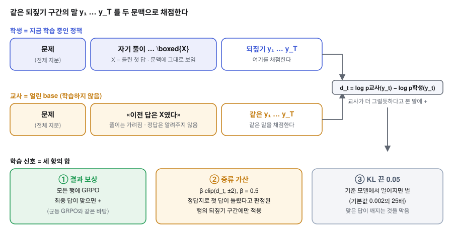
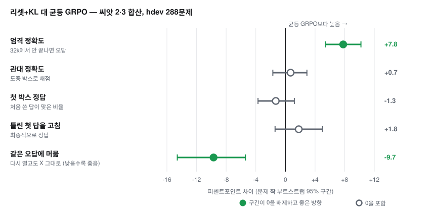

수학 문제를 푸는 언어 모델은 가끔 첫 답(\boxed{…})을 쓴 뒤 스스로 다시 풀어 답을 바꾼다.
이 연구는 그 되짚어 고치는 습관을 키우면 정확도가 오르는지를 묻는다.
정답지나 외부 교사 모델 없이, 모델 자신을 교사로 쓰는 셀프 디스틸레이션이다.
주장마다 근거와 상태를 같은 표에 적었다. «확인»은 신뢰구간이 0을 배제한 경우만이다.
| 주장 | 근거 | 상태 |
|---|---|---|
| 자기 오답이 문맥에 있으면 모델은 그 답에 끌려간다 (닻) | 문맥 안에서 두 번째 답이 정답인 경우 0/1,248. 풀이를 가리고 새로 풀면 고침이 .353 대 .121(약 3배, 학습 없음) | 확인 |
| 풀이를 가린 자기 자신을 교사로 증류하면 닻이 풀린다 | 다시 열고도 같은 오답에 머무는 비율 −9.7pp [−14.6, −5.4] (균등 GRPO 대비, 씨앗 2·3 합산) | 확인 |
| 엄격 정확도가 오른다 | +7.8pp [+5.4, +10.2]. 단 잘림이 16.6pp 줄어든 효과가 대부분. 평가에 «같은 답 3번 연속이면 멈춤» 규칙을 넣으면 차이는 약 +1pp | 해석 주의 |
| 틀린 첫 답을 더 잘 고친다 | 쉬운 앞부분 probe에서는 위약 대비 +.12 [+.09, +.16]. 어려운 hdev 합산은 +1.8pp [−1.4, +5.0] | 부분 |
| 최종 정답률(관대 정확도)이 오른다 | 균등 GRPO 대비 +0.7pp [−1.7, +2.9]. 같은 수준 | 미확인 |
| 표준 벤치마크(MATH-500 · AIME · HMMT)에서 base를 넘는다 | 측정이 큐에 있고 결과가 아직 없다 | 미측정 |
\boxed{…} 답.닻 때문에 모델은 자기 풀이가 보이는 문맥에서 되짚으면 같은 오답을 반복한다. 풀이를 가리고 «이전 답은 X였다»만 보여 주면 같은 모델이 훨씬 잘 고친다. 이 가린 눈의 판단을, 풀이가 보이는 단일 패스의 행동으로 옮기는 것이 목표다.


같은 씨앗(3)에서 절대값은 다음과 같다. 균등 GRPO는 첫 박스를 올렸지만 32k 반복 폭주(잘림 .296)로 엄격 정확도가 base 아래로 내려갔다. 리셋+KL은 이 폭주를 막았고(잘림 .094) 맞은 첫 답도 지켰다(.926).
| 팔 (씨앗 3) | 관대 | 엄격 | 첫 박스 | 잘림 | 고침 | 같은 오답 | 맞은 첫 답 엄격 |
|---|---|---|---|---|---|---|---|
| base | .621 | .598 | .588 | .061 | .137 | .518 | .934 |
| 균등 GRPO (대조군) | .641 | .514 | .607 | .296 | .143 | .688 | .793 |
| 리셋+KL | .642 | .609 | .587 | .094 | .181 | .584 | .926 |
출처: docs/RESULTS_cd9.md «10-06 08:xx». base 대비 차이는 점추정으로 관대 +2.1pp, 엄격 +1.1pp이며 원장에 신뢰구간이 없다.
결과가 원장(docs/RESULTS_cd9.md)에 올라오면 이 페이지의 «한눈에» 표를 먼저 고친다.
아래 가설은 측정으로 닫혔다. 일부는 현재 방법의 설계 이유가 된다. 자세한 수치는 닫힌 축과 닻 진단에 있다.
| 가설 | 결과 한 줄 |
|---|---|
| 풀이 중간에 검산·전환 문장을 심으면 답이 바뀐다 | 답이 거의 안 바뀐다(동률 88~93%). |
| 모델 내부 상태로 «이 시도가 틀렸다»를 알 수 있다 | 같은 문제 안에서는 우연에 가깝다(AUC ≈ .57). |
| 같은 문맥에서 «다시 보라»고 하면 구제된다 | 닻에 걸려 0/1,248. → 현재 방법의 출발점. |
| 비판·계획 같은 메타 문장의 내용이 정확도를 올린다 | 내용 효과는 0, 이득은 길이로 설명된다. |
| 자발적 수정에 크레딧을 얹은 RL | 네 종류 모두 실패. 수정을 오히려 줄였다. |
| 성공 형제와의 대조로 말에 크레딧을 배분(CH) | 첫 풀이가 무너져 base보다 −12pp, 균등보다도 나빴다. 더 올리지 않는다. |
2026-07의 rq3 매치드 래더와 PMI-shift 결과는 감사에서 불인증되어 보관용 페이지로 옮겼다.